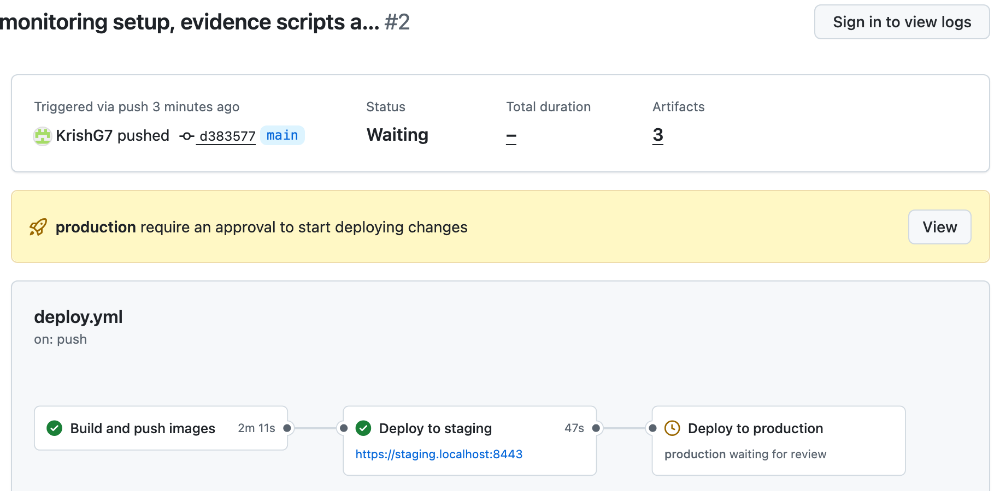
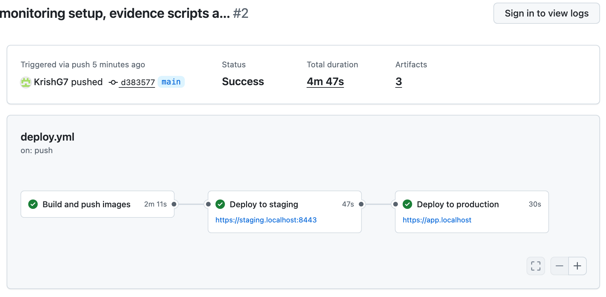
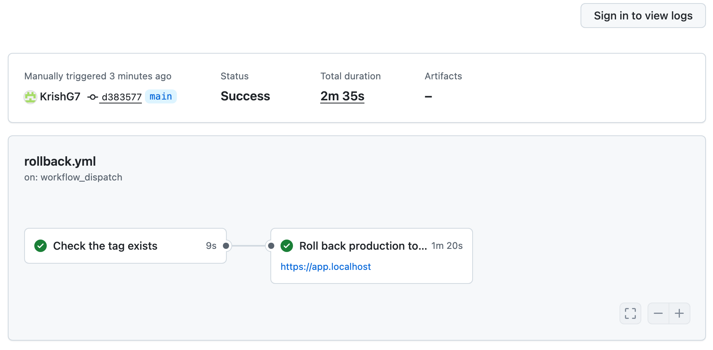
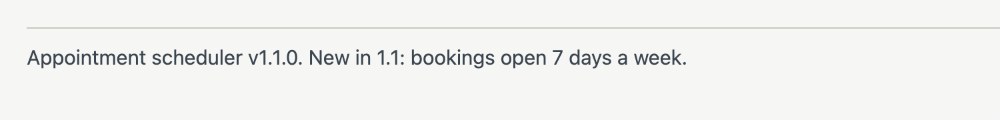
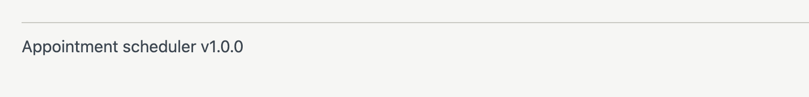
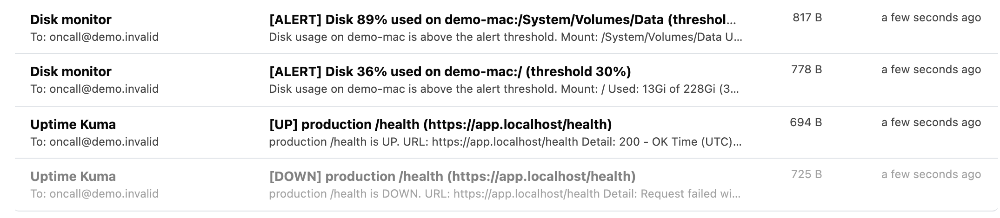
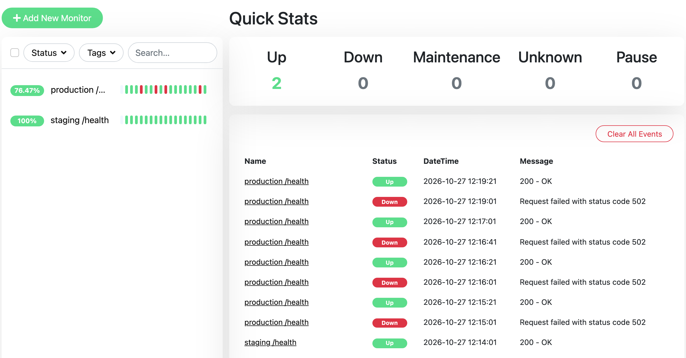

I built a small appointment app (React, Node.js 20, PostgreSQL 16) and put it through the setup you described: two environments, GitHub Actions with a manual production approval, HTTPS, restarts, access controls, daily backups with retention, a restore into staging, alerts and a rollback. Everything below was run and observed, and every number comes from a saved log. Where something can only be done on a real Linux server, it is written as a runbook and marked documented, not run in this demo.
| # | Scope point | What was done and observed | Evidence |
|---|---|---|---|
| 1 | Staging and production | One Compose file run as two projects, each with its own database volume, ports and secrets. Both served the app over HTTPS. | p. 2 |
| 2 | GitHub Actions, manually approved production | Every push to main builds once and deploys to staging automatically. Production waits for a named reviewer, then deploys the identical image (same digest), never a rebuild. A backup runs automatically right before each production deploy. | p. 2 |
| 3 | HTTPS | Caddy terminates TLS; deploy health checks verify the certificate against the issuing CA rather than skipping verification. Here Caddy uses its own local CA. Let's Encrypt on your real domain is the same Caddyfile with the domain filled in: documented, not run in this demo. | p. 2 |
| 4 | Restarts | All services restart automatically and have healthchecks. I killed the production API process: Docker restarted it and /health answered 200 again in under 1 second. | p. 4 |
| 5 | Access controls | Non-root containers, no database port exposed, separate secrets per environment, production gated by a reviewer. Backup storage users tested: 3 allowed and 4 denied actions, exactly as designed. SSH keys only, no root login, firewall 22/80/443, fail2ban, automatic security updates, restricted deploy user: documented, not run in this demo. | p. 3 |
| 6 | Daily PostgreSQL backups with retention | pg_dump on a daily schedule to offsite-style object storage, each dump checked as readable. Retention test: 60 daily backups in, 9 kept (7 daily plus 4 weekly), 51 removed. | p. 3 |
| 7 | Tested restore into staging | A fresh production backup restored into staging with checksum, row count (28 of 28) and health checks. Total time 3.5 s for this small database. | p. 3 |
| 8 | Uptime, disk and app-failure alerts | Uptime Kuma emailed DOWN when production went down and UP when it came back. The disk script emailed when usage passed its threshold and stayed quiet below it. | p. 4 |
| 9 | Demonstrated rollback | Released v1.0.0, then v1.1.0 with a visible change, then rolled production back to v1.0.0 through the same approval. 64.4 s from approval to healthy, with no failed health check during the switch. | p. 2 |
The verification table records 32 PASS, 1 FAIL and 4 NOT RUN. The FAIL is one early screenshot of the v1.0.0 page that missed the footer showing the version (the health endpoint records the version instead). The 4 NOT RUN items need a real server or your logged-in browser: server hardening, a Let's Encrypt certificate on a real domain, the SSH deploy, and a screenshot of the approval dialog.
One workflow builds the images once and tags them with the commit (sha-d383577) and the release (v1.1.0). Staging is deployed automatically and must report the new version on /health within 60 seconds, or the job fails. Production then waits for a reviewer. After approval, it takes a backup and deploys the same tag that passed staging; the API image digest was identical in both environments. Rollback is a separate workflow that redeploys an earlier tag behind the same approval, with no rebuild and no database change.



| Step | Result |
|---|---|
| Release v1.1.0, approval to production healthy | 19.1 s; the pre-deploy backup (28 rows) ran first in the same job |
| Rollback v1.1.0 to v1.0.0, approval to healthy | 64.4 s. About 47 s of this was the runner on the demo machine picking up the job; the deploy step itself took 12 s (06:58:40 to 06:58:52 UTC). |
| Health during the rollback (one request per second) | 58 requests, all answered: 57 on 1.1.0, then 1.0.0. No errors. |
| Image after rollback | Same API digest as the original v1.0.0 release (sha256:4af6a5e4...); rows (28) and migrations unchanged |


A small backup container next to each database runs pg_dump every day at 02:00 UTC, checks that the dump can be read back, records the row count and a checksum, and uploads it to an S3-compatible bucket that stands in for offsite storage. Files are named with the environment and a timestamp, for example production_daily_20261027T062642Z.dump. A speeded-up schedule confirmed the timer fires on its own: backups started at 06:27:00 and 06:28:00 without anyone triggering them.
Tested with 60 dummy backups, one per day from 29 August to 27 October 2026, then the real pruning script. Result: 60 before, 9 after, 51 deleted.
# BEFORE pruning: 60 dummy backups production_daily_20260829T020000Z.dump production_daily_20260830T020000Z.dump production_daily_20260831T020000Z.dump ... 54 more, one per day ... production_daily_20261025T020000Z.dump production_daily_20261026T020000Z.dump production_daily_20261027T020000Z.dump
# AFTER pruning (7 daily + 4 weekly): 9 left production_daily_20261011 Sun week 41 production_daily_20261018 Sun week 42 production_daily_20261021 Wed week 43 production_daily_20261022 Thu week 43 production_daily_20261023 Fri week 43 production_daily_20261024 Sat week 43 production_daily_20261025 Sun week 43 production_daily_20261026 Mon week 44 production_daily_20261027 Tue week 44
Weeks 43 and 44 are already covered by the daily copies, so the four weekly slots add weeks 41 and 42. This is the same rule restic and similar tools use.
Staging had 25 rows; production had 28, including three entered through the live API. The script stops the staging API, downloads the backup, verifies its checksum, drops and recreates the database, restores, compares row counts, starts the API and checks health.
[restore-to-staging] restoring production/manual/production_manual_20261027T063003Z.dump into staging
[restore-to-staging] step 1/4: stopping staging api
[restore] checksum matches metadata; rows at backup time: 28
[restore] dropping and recreating database 'appointments'
[restore] pg_restore into 'appointments'
[restore] appointments rows after restore: 28 (expected 28)
[restore] row count check: OK
[restore-to-staging] health: {"status":"ok","version":"1.0.0","environment":"staging","database":{"status":"ok"}}
[restore-to-staging] API returns 28 appointments, database has 28
[restore-to-staging] RESULT: restore OK. total time 3.5 s (3501 ms)
| Credentials | Action | Result |
|---|---|---|
| production | list own backups | allowed |
| production | list or write staging backups | denied (2 tests) |
| staging | list and read production backups (needed for restore tests) | allowed (2 tests) |
| staging | write or delete production backups | denied (2 tests) |
Uptime Kuma runs separately from both app stacks and checks /health on staging and production every 20 seconds. Alerts go by email; here a local inbox (Mailpit) receives them so they can be shown.


| Drill | Observed |
|---|---|
| App crash (API process killed) | Docker restarted the container on its own; /health answered 200 in under 1 second. Too short for a 20-second monitor to notice, so no alert. |
| App down (API stopped) | Stopped 06:48:55 UTC, DOWN email 06:49:01. Started again 06:49:02, UP email 06:49:21. |
| Disk, threshold 30% | System disk at 36%: alert sent. |
| Disk, normal threshold 80% | System disk at 36%: no alert. The demo machine's data disk really was at 89%, so the same check correctly alerted there. |
SELECT pg_size_pretty(pg_database_size(current_database())); is enough to size the servers and plan the maintenance window.